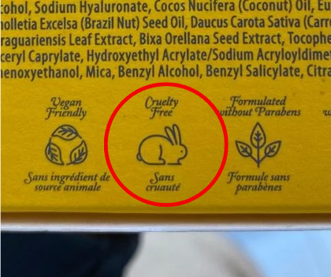

Does “Cruelty-free” drive your product sales?
Cosmetics is one of the most popular categories in the market with sustainability features: “Organic”, “Natural”, “Ethical”, “Sustainable”, “Eco-friendly”… and so on. This research focuses on one of the most popular sustainability feature of all times: cruelty-free. Many associate it with a bunny logo, others look for “not tested on animals” promises, while some consumers seek for cruelty-free certification.
I am only here to focus on 1 of the 2 main ways to communicate the cruelty-free feature: CLAIMS with “Cruelty-free claims” I refer to the most superficial way of communicating this feature, where a “cruelty-free” or “not tested on animals” claim is stated, without further explanations or details, often without any reference on where to get them.

The problem with this format is that it doesn’t directly communicate what’s the brand’s committment to the animal testing issue. Does it mean that both the final product and its ingredients were not tested on animals? or that final product only was not tested on animals, but the brand doesn’t have control over the ingredients testing? Well, you get the idea right…this is briefly the main difference between claims and certifications, since the latter are a direct reference to specific criteria, standards and audits; the former is often ambiguous and in some cases, even illegitimate.
That’s why “not tested on animals” claims are such a great deal for companies, because they address the issue of animal cruelty subtly and smartly, hinting at the clever intention without revealing details.
Here I am talking to businesses
I know that animal-friendly attributes elevate the brand’s image and animals are among the most powerfull heuristics, I understand you want to evoke an emotional response to motivate the purchase, and we both know the powerfull effect of “cruelty-free” as a call-for-action term…but, does displaying this claims enhances your products? what about your credibility and your reputation if you’re found to be lying about animal testing?
If your committment is not even real, are you sure this labels add value to your products? This is our first point of discussion, and it’s directly linked to another question…Do consumers really care about the animal testing issue? What is sure, is that no one dares saying “I don’t care about animals!” (at least in surveys ) and many experience emotional ponderig, followed by a sort of moral obligation, in front of the wise combination of the word “cruelty” and a cute bunny drawing.
Research objectives and how to achieve them
I am determined to find a direct answer to the question: Does “Cruelty-free” boost your product sales?
In order to do that, I decided to look at the most immediate and undeniable source of information I could get: e-commerce data. As while browsing through the products of an e-commerce, we can immediately realize which products are most popular and which have the best reviews, this research aims to analyze those data to assess the performace of cosmetics products, both labeled as cruelty-free and not, to find out wether cruelty-free products are performing better than others. At the end, We will be at least able to conclude if there is a relationship between the use of cruelty-free claims and product popularity, and/or a relationship between the claims and consumers’ ratings of the products.
For conducting this research I chose Douglas, a cosmetics company that sells a wide range of cosmetics through their e-commerce platform, including skin care, makeup and hair care, and displays the most iconic digital version of the cruelty-free claim: the “not tested on animals” filter for search results. Given Douglas popularity among italian customers, the wige range of products and categories they offer, and the way they display cruelty-free claims, Douglas.it is the perfect and most representative platform to test this experiment.
In order to understand if cruelty-free claims (in this specific case intended as products labelled as “not tested on animals” while shopping online) are or are not a good deal for companies; we need to assess consumers’ perception of them. Consumers’ perception is given by:
- Product Popularity: are products with cruelty-free claims more popular than those without? Do people buy this products more than the ones without cruelty-free claims? Do they prefer them? We can measure this by looking at the number of reviews for each product, that is, the number of people who certainly bought it. N.B. While the ideal indicator of popularity for this purpose would be sales volume (number of units sold), I was only able to work with the number of reviews. Since Douglas has not hired me yet, I didn’t have access to their data, but I was still able to scrape their website and extract the reviews count for each product.
- Consumers’ Sentiment: do consumers have a different sentiment or opinion towards products with cruelty-free claims? Do they tend to like them more than the ones without? An honest indicator of consumers sentiment towards the product is rating. Even if consumers use ratings to express their opinions about the overall service (including packaging conditions, shipping times, customer service…) and product rating is a composite number which does not refer to the simple average of ratings assigned by customers, but rather, is a number elaborated by the e-commerce platforms or by agencies hired by them to manage the reviews…it is still our best bet to use it.
Methodology
To achieve the goal of this analysis, a quantitative approach based on data collection from a representative e-commerce (Douglas.it) was adopted. To collect relevant data from these e-commerce, a non-probability sample technique was used: from the entire “Beauty” category, specific subcategories of products were deliberately chosen based on the presence of cruelty-free claims. To conduct the analysis, both products with and without cruelty-free claims were collected from the subcategories “Body” (detergents and treatments), “Face” (detergents and treatments) and “Hair care” (styling and treatments); and the following data was extracted for each product:
- Brand name
- Price (product selling price, per unit)
- Rating (composite number from product star rating evaluation, ranging from 1 to 5)
- Reviews count (number of reviews per product)
- Claim (presence of a “not tested on animals” claim)
- Unique product ID
The necessary data to conduct the research were collected through a web scraping process. Web scraping is a technique used to extract data from websites in an automated manner: the use of this technique has enabled the efficient collection of primary data on a large number of products in a systematic and repeatable manner, avoiding manual collection that would have been extremely costly and prone to errors.
Data Pre-Processing
Before proceeding with the analysis, the collected data was cleaned and prepared for the analysis as following. For guaranteeing a correct analysis, all observations with missing values on the main variables were handled through removal. Duplicate observations in the datasets occurred, due to some products simultaneously appearing in multiple subcategories, and “sponsored products” being displayed at the top of every page in a given category. All of the duplicate observations were easily identified thanks to the unique product ID of each product, and were also removed. For what concerns the outliers in the data, the decision to not implement any outlier treatment was taken. After data scraping, outliers among numerical variables were naturally present in the sample. Since they didn’t represent measurement errors, it was my personal interpretation that, in this specific research case, outliers represent natural variations in the population, such as existing market situations and their exclusion could have led to the loss of meaningful observations. For these reasons, outliers were included as part of the dataset.
Categorical variables encoding
In order to include categorical variables in the analysis, such as “brand” and “cruelty-free claim”, transforming them into numerical variables was necessary. For the variable “brand”, representing the different brands of products in the dataset, a one-hot encoding was performed, so a binary column was created for each unique category in the variable. As a result, the dataset included a column for each brand, with a value of 1 if the product belongs to that brand and 0 otherwise. For the variable “cruelty-free claim”, binary encoding was applied, resulting into the creation of a new column assigning a value of 1 to “not tested on animals” products, and 0 to those without such claim.
At this point, a clean dataset of 5620 observations was ready for the analysis!
Data Analysis
We are ready to start our analysis and find the answer to our questions. RQ1: Are “not tested on animals” products more popular than those without this statement? and RQ2: Do consumers have a different opinion/sentiment about “not tested on animals” products compared to those without this feature? To meet the research final goal, which is to understand wether cruelty-free drives cosmetic products sales or not, and answer to our research questions RQ1 and RQ2, multiple regression modeling was applied to the dataset as follows:
- POPULARITY MODEL
\[𝑃𝑜𝑝𝑢𝑙𝑎𝑟𝑖𝑡𝑦 = 𝛼 + 𝛽1𝐶𝑙𝑎𝑖𝑚 + 𝛽2𝑃𝑟𝑖𝑐𝑒 + 𝛽3𝐵𝑟𝑎𝑛𝑑\]
where - Popularity is given by reviews count - 𝛽1 is presence of “not tested on animals” claim - 𝛽2 is product price - 𝛽3 is product brand
This OLS model will explain how the presence of a cruelty-free claim, product price and product brand impact the popularity of cosmetic products on Douglas.it. Therefore, it allows us to answer to our RQ1. Our null hypothesis to test it, is that the coefficient of presence of cruelty-free claim is equal to 0, i.e., 𝛽1 = 0, meaning that the cruelty-free claim does not impact product popularity
- SENTIMENT MODEL
\[𝐿(𝛼, 𝛽) = ∑𝑤𝑖 (𝑆𝑒𝑛𝑡𝑖𝑚𝑒𝑛𝑡 − 𝛼 − 𝛽1𝐶𝑙𝑎𝑖𝑚 − 𝛽2𝑃𝑟𝑖𝑐𝑒 − 𝛽3 𝐵𝑟𝑎𝑛𝑑)^{2}\]
where - Sentiment is given by rating - 𝛽1 is presence of “not tested on animals” claim - 𝛽2 is product price - 𝛽3 is product brand
This WLS model is estimated with a loss function where weights w is the number of reviews for product i. In this way, the dependent variable Sentiment is given by rating weighted by the number of reviews. This choice was made to differentiate between “more informative” observations, such as those with a higher number of reviews, and “less informative” observations, such as those with ratings that are based on few reviews. In such way, the proper weight is given to each observation based on the amount of reviews. This model will explain how the presence of a cruelty-free claim, product price and product brand impact the consumer sentiment for products on Douglas.it. Therefore, it allows us to answer to our RQ2. Our null hypothesis to test it, is that the coefficient of presence of cruelty-free claim is equal to 0, i.e., β1 = 0, meaning that the cruelty-free claim does not impact consumer sentiment.
Results
| X | Coeff. | Stand.Error |
|---|---|---|
| const. | -6.318* | 4.814 |
| cruelty-free claim | 6.358* | 3.411 |
| price | 5.735*** | 1.556 |
| X | Coeff. | Stand.Error |
|---|---|---|
| const. | 4.263*** | 0.060 |
| cruelty-free claim | -0.131** | 0.058 |
| price | 0.071*** | 0.018 |
***p<0.01, **p<0.05, *p<0.1
We have an answer! Let’s discuss about it
We have an answer! The models have successfully predicted popularity and consumers’ sentiment of cruelty-free products, now let’s discuss about it.
In the Popularity model, the coefficient 𝛽1 (cruelty-free claim) is positive and significant, therefore, we answer our RQ1 and reject the null hypothesis. We conclude that the presence of a cruelty-free claim has a positive and significant impact on the popularity of products on the platform…meaning that cruelty-free products are more popular compared to products without this feature.
In the Sentiment model, the coefficient 𝛽1 (cruelty-free claim) is negative and significant, therefore, we answer our RQ2 and reject the null hypothesis. We conclude that the presence of a cruelty-free claim has a negative and significant impact on the sentiment of consumers towards products on the platform…meaning that consumers express a less positive sentiment towards cruelty-free products compared to products without this feature.
Dear Companies…
To be straightforward, we can tell YES, adding a “not tested on animals” caption on your cosmetic products will make them more popular. According to this study, the presence of a cruelty-free claim (as a variable) contributes to defining what makes a product popular on the platform, together with product price, and product brand. Since the coefficient 𝛽1 is positive, we can tell that the presence of a cruelty-free claim positively influences the popularity of products with this label. Body, Hair and Face care cosmetic products with a “not tested on animals” feature have an average of 6 additional reviews compared to products without this feature. This means that people tend to buy products with this feature more than products without it.
But hold still, because the Sentiment model tells us something more: the presence of a cruelty-free claim is also significantly associated with the consumers’ sentiment towards products on the platform: this means that the cruelty-free label is also an indicator of satisfaction with the product…and it’s not good news. The coefficient 𝛽1 being negative suggests that the presence of a cruelty-free claim negatively influences the sentiment of consumers towards products with this label. This means that YES, consumers have a different opinion on cruelty-free products, and it’s NEGATIVE!
This means that even tho cruelty-free products are preferred, consumers tend to express less positive feelings towards them. So, consider well wether it’s a good idea to add a “not tested on animals” caption on your cosmetic products…balance the price with the added value that this label brings to your products…because consumers may think that being cruelty-free makes your products…naturally magical maybe? And they may remain disappointed if they don’t find it so.
Dear Consumers…
Let me tell you something: COMPANIES ARE LITERALLY PLAYING WITH YOUR FEELINGS! If you actually care about the animal testing issue and it’s important for you that the companies you support buying their products don’t empower this brutal pratice, then please listen to me.
Whenever you are struggling to choose between a product that claims to be not tested on animals, displaying cute bunnies and cuddling kittens or statements like “We love animals” “We are animal friendly”, and a product that you like but doesn’t claim to be cruelty-free, take a deep breath and SEARCH FOR MORE INFORMATIONS.
As I said before, products that communicate their committment through claims like these are often lying. You can tell me “how could they lie? isn’t there any kind of consumers’ protection?” and I’ll tell you “yes, since we live in EU, consumers are protected from false claims on products by this regulation and if you read it, and go further to the monitoring report conducted by the European Commission to assess compliance with the regulation, you’ll see that in many cases companies were found lying about their cruelty-free claims”.
What I want to say is…this study, as many others, demonstrate that we tend to purchase products driven by heuristics, rather than thorough investigation of product details, and companies take advantage of this. Don’t be fooled, don’t let them have power over you. If you care about animal testing, support those brands that don’t lie about it, but embrace cruelty-free as a core value and guarantee third-party certifications for their products.
Dear Academic Community…
I’m not a professional researcher, but I can guarantee for the quality of the study and the methodology used. I was impressed by the results and how they can contribute to further understanding of Consumer Behaviour and Consumer literacy of sustainability features. Moreover, the study can potentially contribute to investigate the attitude-behavior gap between expressed concern for animal welfare and actual purchase of cruelty-free products, with Douglas.it being a prime example of a marketplace where the gap is finally filled.
A quantitative research, which focuses on understanding customers’ beliefs, values and barriers to purchase cruelty-free products through structured methods such as structured questionnaires, could reveal psychological barriers and facilitators associated with cruelty-free cosmetics choice intentions.
What about price and brand? How do they affect products popularity?
As we can observe from the tables above, the variable “price” is also significant in predicting both popularity and consumers’ sentiment. Moreover, the most attentive readers might have noticed that both the OLS and the WLS models include the variable “brand”. While someone can already guess an interpretation for the “price” variable results, I’ll just say…I didn’t expect Douglas customers to be so wealthy! Then, I won’t reveal details about the brands…just expect a surprising 2024 Top Cosmetics Brand Ranking: the most popular and the most loved in the next post!